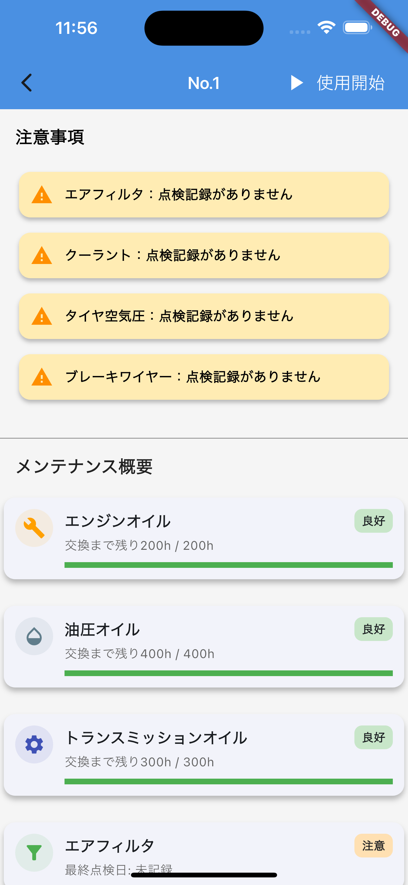

紙が溜まる
1 年分の点検用紙が大量に残り、保管場所と過去記録の検索に手間がかかる。
FIELD OPERATIONS / PRODUCT CASE STUDY
FarmFlow は、紙に埋もれていたトラクターの始業前点検を、
現場で記録し、状態を共有できるモバイルアプリに置き換える取り組みです。

01 / THE PROBLEM
始業前点検の運用は始まっていても、紙の記録では「残すこと」と「現場で活かすこと」の間にギャップがありました。
1 年分の点検用紙が大量に残り、保管場所と過去記録の検索に手間がかかる。
異常は書かれていても、管理側が体系的に確認できず、対応の優先順位がつけにくい。
不具合の情報が現場で共有されず、次の作業者が故障に気づかないまま使うリスクがある。
点検を「保管する紙」から、使う前に確認できる状態データへ。
02 / CORE EXPERIENCE
機械を選ぶところから、状態確認、始業前点検、交換記録まで。作業のタイミングに沿ったフローにしています。
一覧で稼働状況と注意の有無を把握。使いたいトラクターへすぐに移動できます。
オイルやフィルターなどの残り時間をゲージ化し、交換の近い項目と注意事項を一画面に集約します。
チェックリストに沿って判定し、機械ごとの点検結果を保存。異常を次の画面へ引き継ぎます。
頻度の高い項目はカードの長押しから記録。作業中でも手順を増やし過ぎない操作にしています。
03 / PRODUCT SCREENS
ステータスの色、点検の選択肢、保存完了のフィードバックを明確にし、屋外でも要点がつかみやすい表示を目指しています。
画面を選択すると拡大表示できます
04 / TECHNOLOGY
MVP では、現場向け UI の改善速度と、要件変更に追従できる API 設計を優先。フロントとバックエンドを分け、将来の管理画面にも広げられる形にしています。
Offline-first policy通信できない圃場ではローカルに保存し、復帰後に同期する方針で設計。
05 / WHAT'S NEXT
今は「始業前点検を確実に回す」ための MVP。次は通信環境、管理側の確認、複数拠点での運用へと、現場検証を重ねながら広げていきます。
通信状態を意識せず点検を続けられるキューと復帰後の同期フロー。
未対応の異常、交換時期、機械ごとの傾向を管理側が確認できる Web ビュー。
データ量や利用拠点が増えた段階で、SQLite から PostgreSQL への移行を検討。
入力時間、片手操作、エラー表示、注意情報の優先度を実運用から見直す。
FARMFLOW